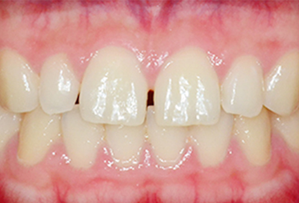
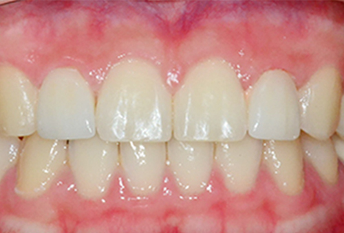
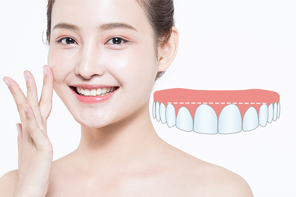
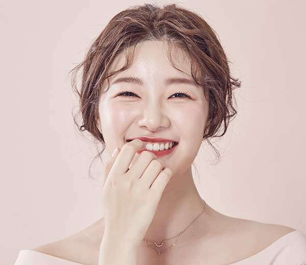
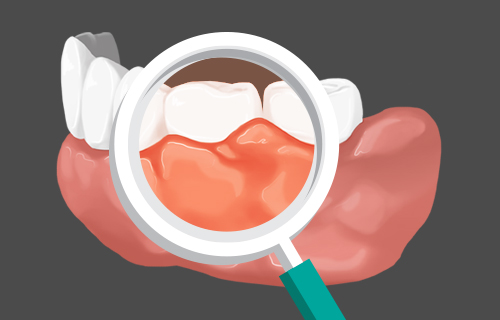
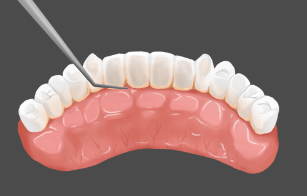
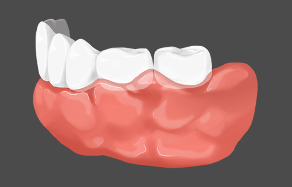
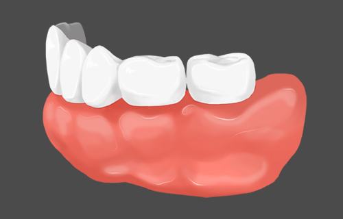
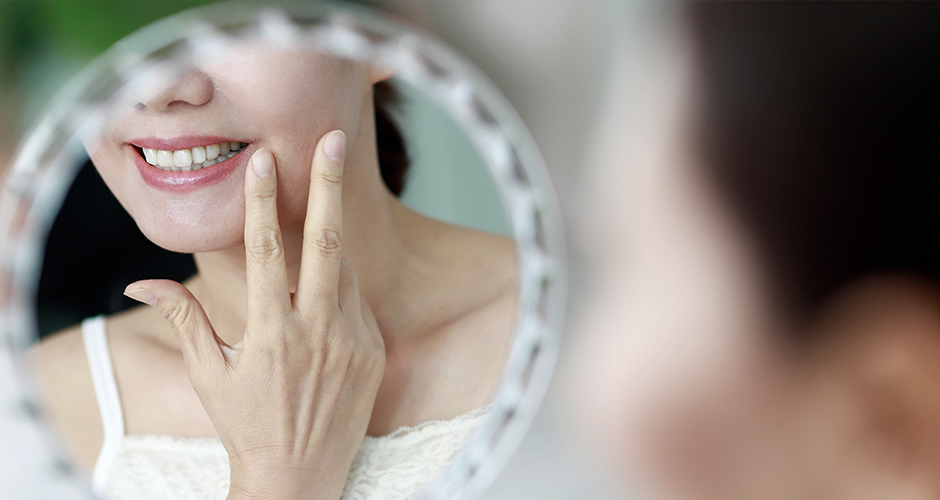

진단
개개인 1:1 맞춤 상담을 통해 개별적으로
잇몸 모양에 맞는 방법을 선택하는 과정입니다
YONSEI HIVE DENTAL CLINIC
잇몸성형이란 가지런 하지 않은 잇몸라인을 잇몸성형을 통해
치아와 잇몸을 가장 조화롭게 만들어주는 레이저 심미치료입니다.

BEFORE

AFTER
잇몸자체가 반달 곡선을 그리며 부어 오르거나 뚱뚱하지 않고
미소 지을 때 잇몸이 과도하게 드러나 보이지 않아야 합니다.
<%=m_client_name%>는 치아와 잇몸선에 대한
정확한 미의 기준을 적용해 잇몸선에 대한 위치 분석 및 대칭에 대한
분석으로 인위적인 잇몸성형이 아닌 자연스러운 잇몸 라인을 위한
성형을 진행합니다.


좌우 잇몸
대칭이 맞지
않는 경우
웃을 때
잇몸이 지나치게
노출되는 경우
잇몸이 치아를
많이 덮고
있는 경우
치아 뿌리가
노출되어 시리거나
통증이 있는
경우
잇몸이 붓거나
염증 또는 약물에 의해
잇몸이
자란 경우


개개인 1:1 맞춤 상담을 통해 개별적으로
잇몸 모양에 맞는 방법을 선택하는 과정입니다

잇몸성형하기 전 치아의 상태를 확인 후
스케일링 과정을 거칠 수도 있습니다

마취 후, 개인의 원하는 잇몸 모양에 맞게 잇몸 성형을 합니다
세부적인 부분을 살펴본 후 세세하게 조정합니다

출혈에 대한 지혈 처리를 한 후, 잇몸 성형 부위를 확인합니다
약 1~2주 후 잇몸성형 부위의 경과를 확인합니다
